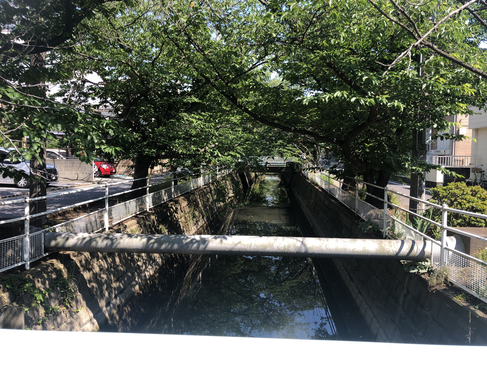

No.1 妙典クリニックモール前
みなさんこんにちは。零阪麻琴です。
さて、長らくお待たせいたしました。本日よりようやく新連載の「トランジット各停停車」が開始です！
初回の今日は、5月16日の改正で新設された妙典駅～原木中山駅入口～本八幡駅の妙典05系統より、「妙典クリニックモール前」の周りを散策します！
さて、降り立って早速目の前におしゃれなお店が見えますね。

こちら、「ボン・クラージュ」というパティスリーさんです。
まず外を見てみると、様々な植物が爽やかかつみずみずしくお出迎えしてくれます。そして店内に入ると、可愛らしい動物の置物がお出迎えしてくれます。 さらに、売り物にもかわいいくまさんがいました。海外から船に揺られてやってきたそうです。
様々なスイーツやケーキがあるなか、私は２つのお菓子を購入。こちらのレビューは後半にて。 店内は少し狭めですが、それがまたいいですね。
かわいらしい店を出て、妙典橋との交差点に向かいます。

この交差点は、妙典橋、妙典中央通り、新浜通りの３つが交差する交通の要衝ともいえる交差点です。
さて、この交差点を新浜通り方向に向かうと、こちらもおしゃれな建物が。こちらはgate.というコワーキング+シェアスペースさんで、一階のコワーキングスペースでは平日は飛び入りでも作業が可能で、会員登録をすれば二階のデスクや和室での作業・会議も可能です。
一階のシェアスペースは、土間で椅子に座って作業したり、和室での作業が可能です。一階の室内には和室のい草の香りが広がっているだけでなく、自然光がちょうどよく入ってきており、快適な空間です！ 去年12月にできたばかりだそうで、DIYなどの工夫で内装を整えたそうです。さらに、ここではイベントも開催可能！6月の12日には、古本市もあるようです。
6月のイベント予定です✨
— gate. (@gate_myoden) June 1, 2021
6/12土 妙典一箱古本市@kamebooks1 さん主催の古本市です📖
同日 すこんてぃさんによる紅茶屋台
6/19土 父の日アレンジワークショップ他 おうちパーティーさん主催のワークショップ、おゆずり会など👚
6/27 ボードゲーム会
それぞれ、詳細は都度告知します😉 pic.twitter.com/7cLyZ9oEx9
さて、外をうろうろしていると、こんな感じの場所が。

この川、雰囲気が結構すきです。河川敷がないのでそこでのんびり出来ないのがちょっと難点かもしれないけど。
さて、ボン・クラージュさんで買ったお菓子を食べていきましょう。落花生ダックワーズから。外があまりにも暑くてだいぶ溶けてしまいましたが、味は変わらないはず。
外のチョコレートのようなコーティングと、落花生の味が調和していて美味しい。一口サイズなのも魅力的です。
続いて「昔ながらのマドレーヌ」。ちゃんとバターを使っているのは高評価です。
...おいしい！バターの味メインかと思いきや、しっかりはちみつが効いています。微妙なバランスの上になりたっていますね。
あと、アルミホイルっぽいやつを使っているのも素晴らしいですね。さすが、昔ながらのマドレーヌ。
さて、本日はここまでとなります。
店舗外装の写真撮影・掲載を快諾してくださいましたボン・クラージュさん、お話を伺わせていただいたgateの稲村絵美里さん、本当にありがとうございました。
次回は市川南高校入口の予定です。